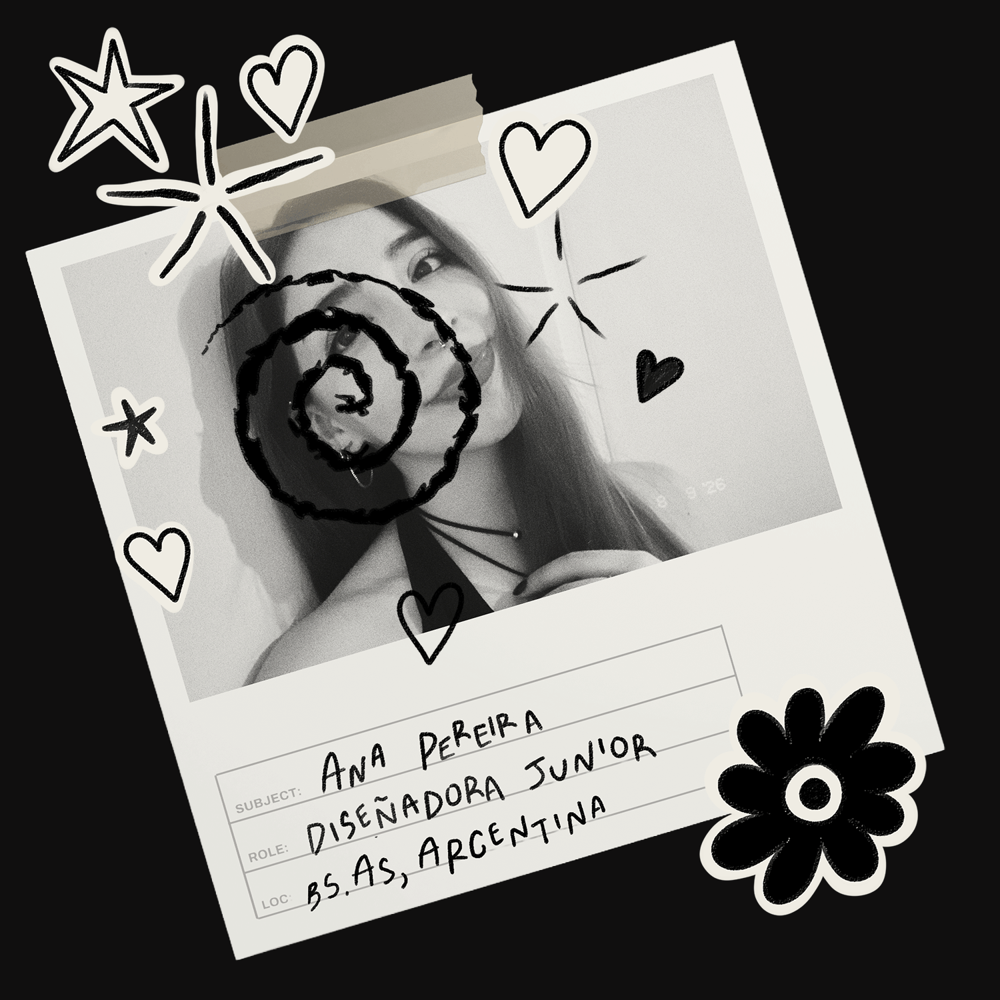
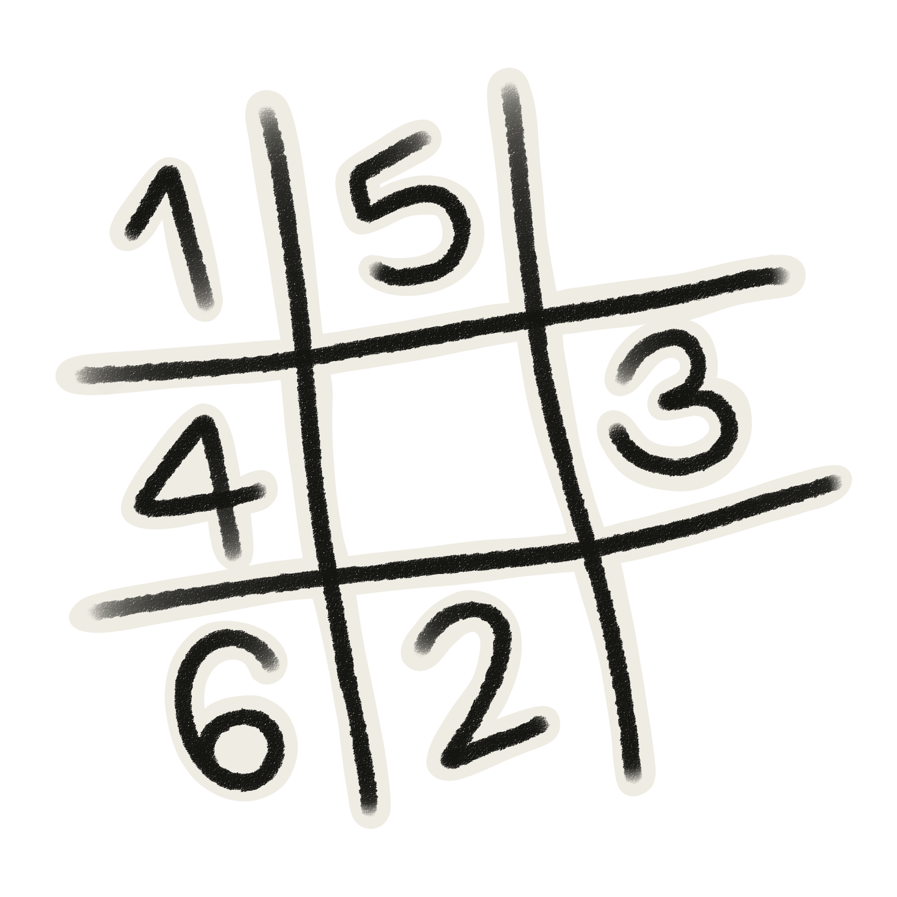
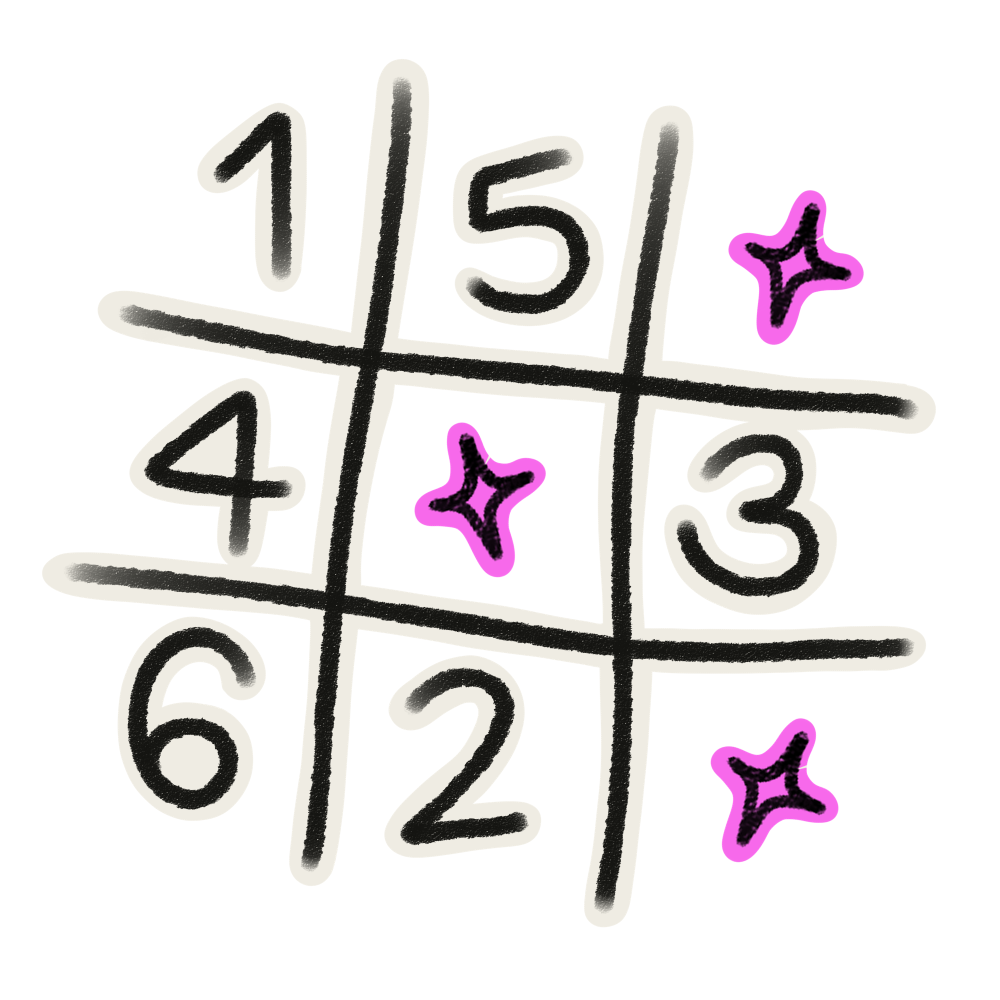
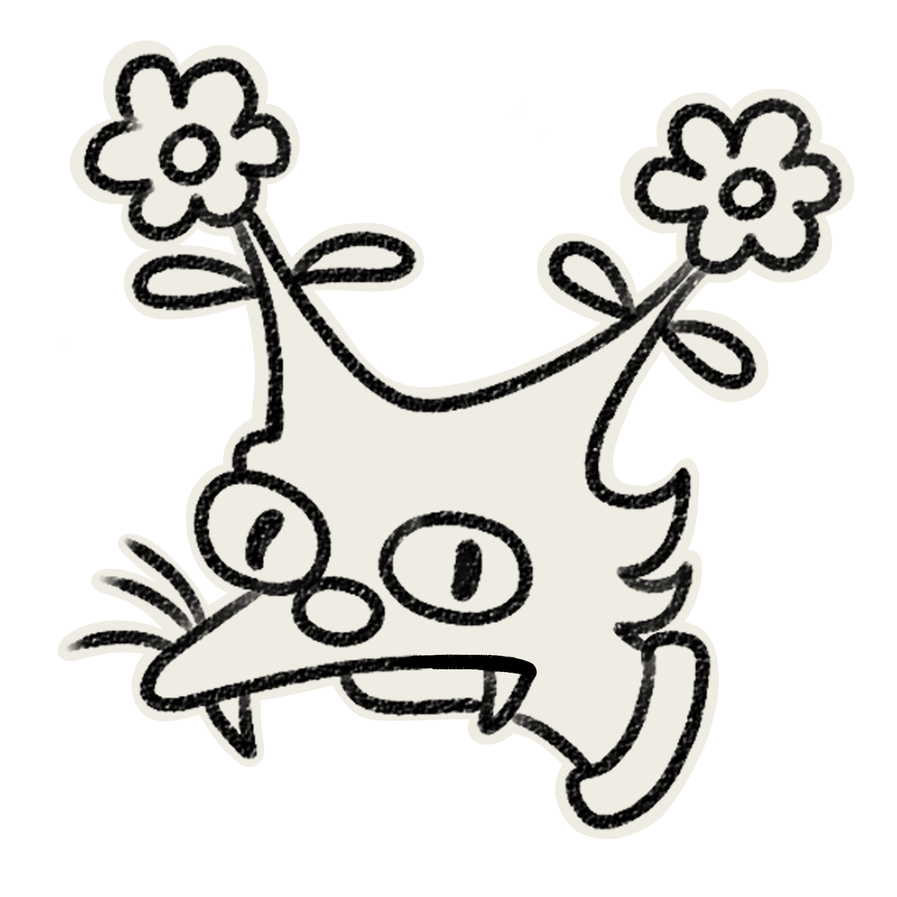
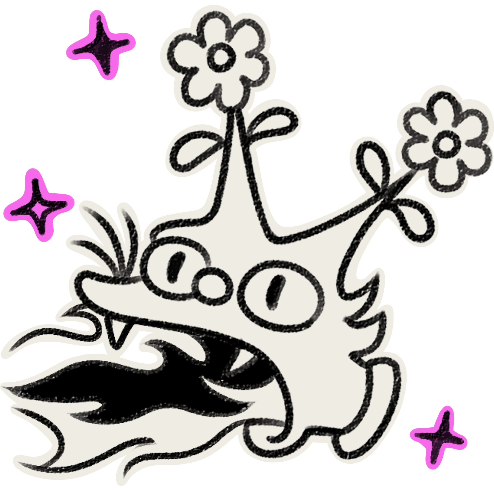
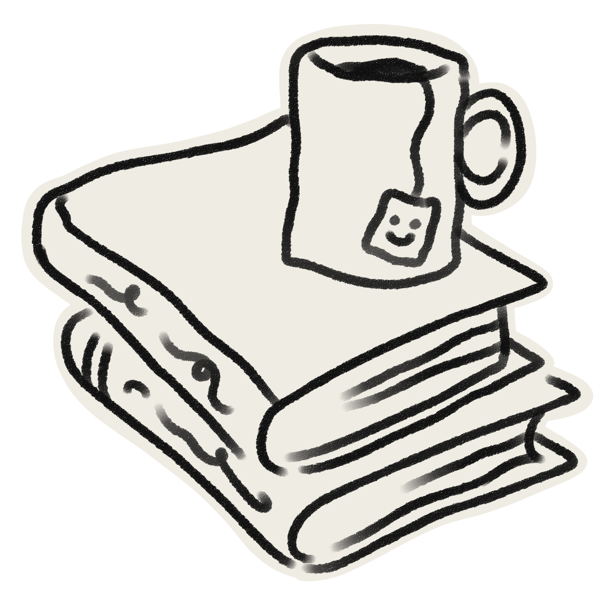
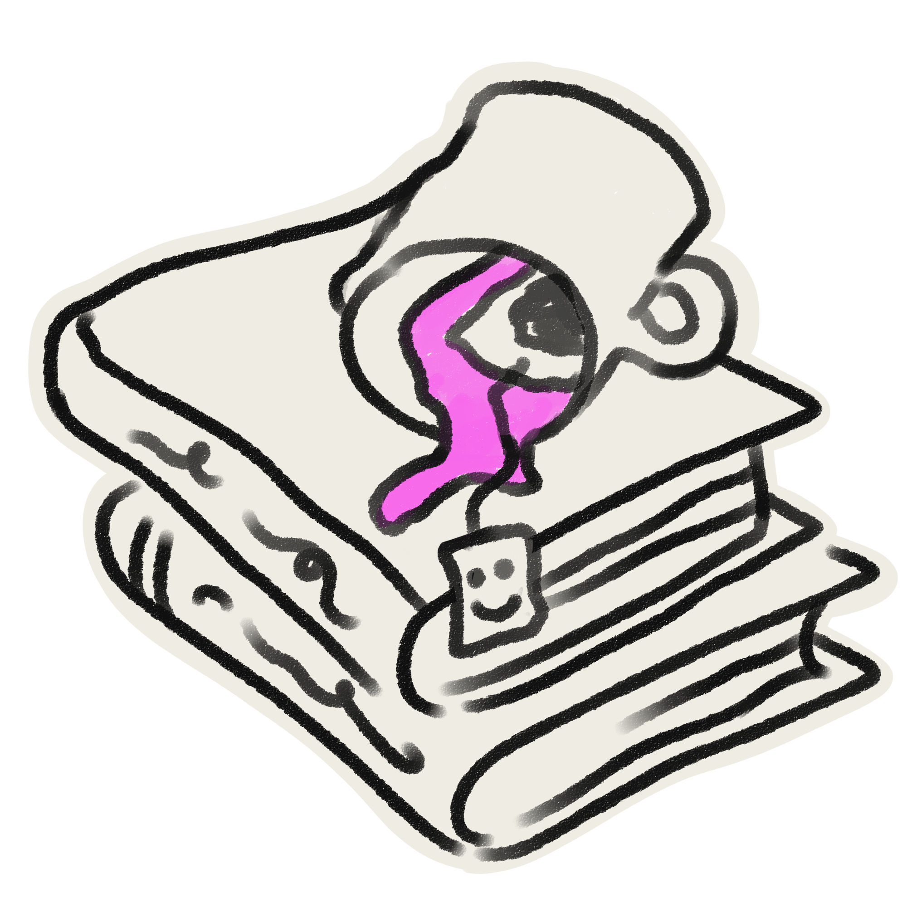

ANA PEREIRA — DISEÑO E ILUSTRACIÓN · BUENOS AIRES
ILUSTRACIÓN
DIGITAL &
SISTEMAS VISUALES
⋆˙

Sobre mí
¡Hola! Soy Ana Pereira, diseñadora en formación y amante del dibujo. Me muevo entre la ilustración digital y el desarrollo de sistemas de comunicación que se adaptan a distintas plataformas y formatos. Me apasiona enfrentar restricciones técnicas y conceptuales exigentes sin perder nunca de vista la estética ni el cuidado por el detalle.
Busco sumarme a proyectos desafiantes donde pueda aportar una mirada creativa y narrativa, mientras sigo aprendiendo y conectando diferentes disciplinas.
PROYECTOS →Algunos datos (in)útiles...


MASTER DEL SUDOKU


PERSONA DE GATOS


LECTORA COMPULSIVA
PERFIL PROFESIONAL ;)
/ EDUCACIÓN
-
2023 - Actualidad
Licenciatura en Diseño y Comunicación Visual. Universidad Nacional de Lanús.
-
2022
Curso de Adobe Photoshop. Universidad Nacional de Lomas De Zamora.
-
2017 - 2022
Bachiller en Cs. Sociales. Instituto Santa Inés de Turdera.
/ EXPERIENCIA
-
2024 - Actualidad
Diseñadora & Ilustradora Freelance
Desarrollo de proyectos visuales independientes, abarcando desde la ilustración digital hasta el diseño de piezas tipográficas y sistemas de comunicación visual. -
2024 & 2025
Ilustradora Colaboradora — Proyecto La Maratón.
Participación en la creación e ilustración de piezas visuales para el proyecto colectivo La Maratón, trabajando en concepto, narrativa visual y composición.
/ HERRAMIENTAS
Paquete Adobe + Ilustración digital
Habilidades Técnicas | Microsoft Office
- Excel
- Word
- PowerPoint